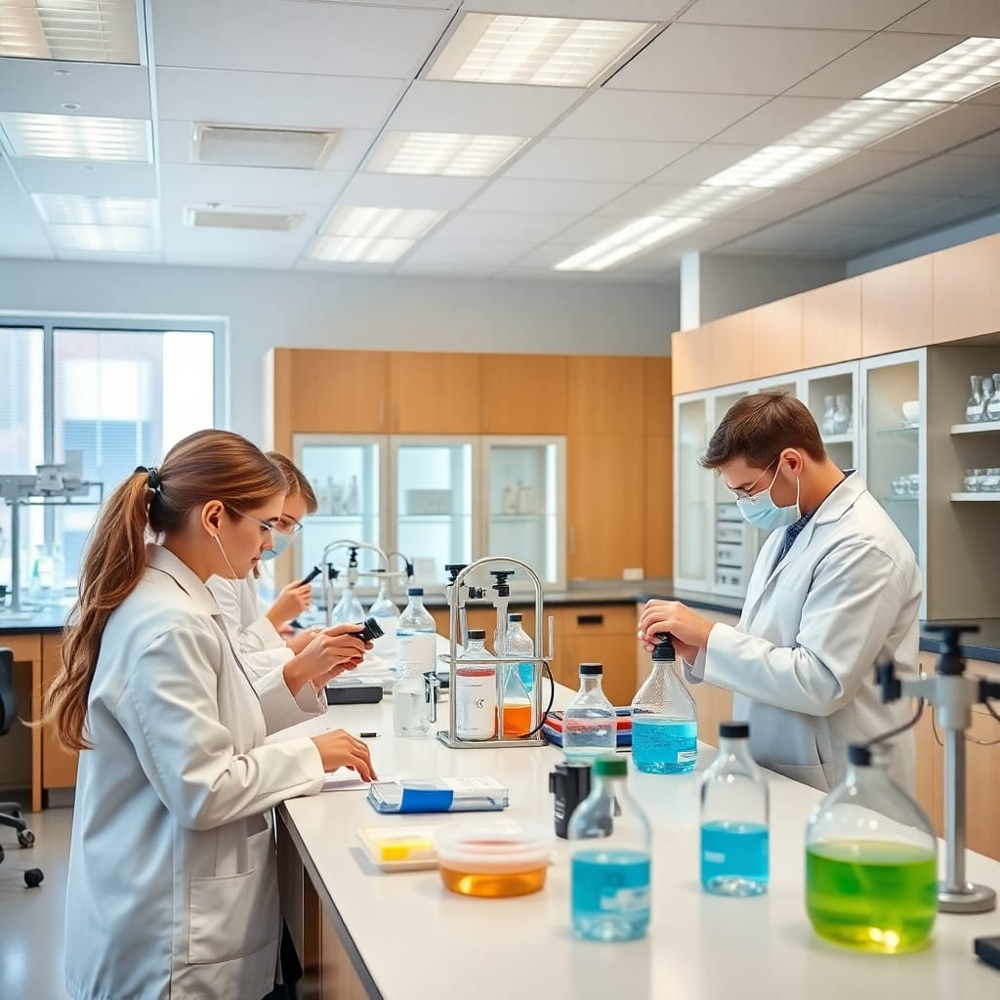
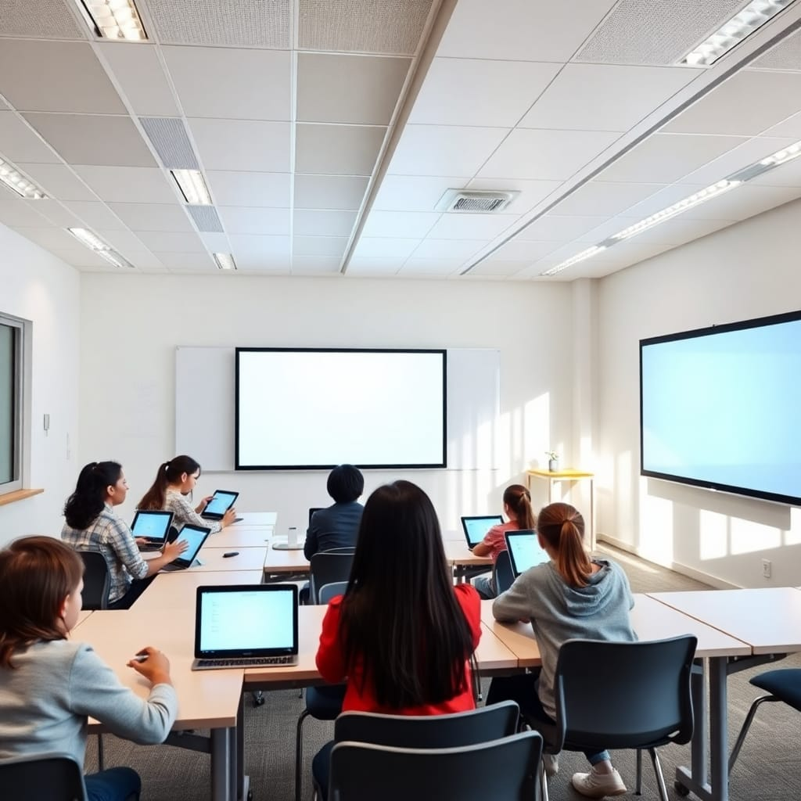
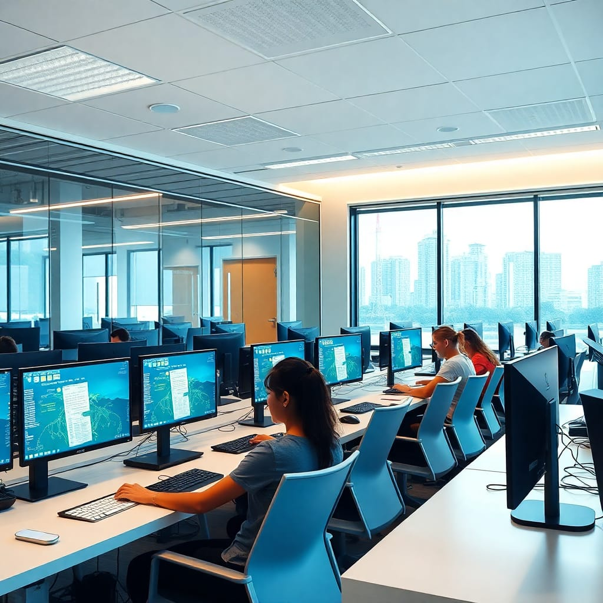

Our Pre-Primary program is designed to provide a joyful and nurturing environment where young learners begin their educational journey with confidence and curiosity.
At Brightland School, our Primary Education program (Grades 1–8) is designed to provide a strong academic foundation while nurturing curiosity, creativity, and confidence in every child.
At Brightland School, our Secondary Education program (Grades 9–10) is designed to prepare students for the Secondary Education Examination (SEE) and build a strong academic foundation for higher secondary studies.
State-of-the-art facilities

Science Laboratories State-of-the-art laboratories for Physics, Chemistry, and Biology equipped with modern instruments and safety equipment for hands-on learning experiences.

Our classrooms are equipped with the latest technology including interactive whiteboards, projectors, and digital learning tools to create an engaging learning environment

Fully equipped computer labs with latest hardware and software to develop digital literacy and coding skills from an early age.
Empowering students with expert guidance for academic success. Your trusted partner in achieving educational goals
Made with by semester tech All Rights Reserved